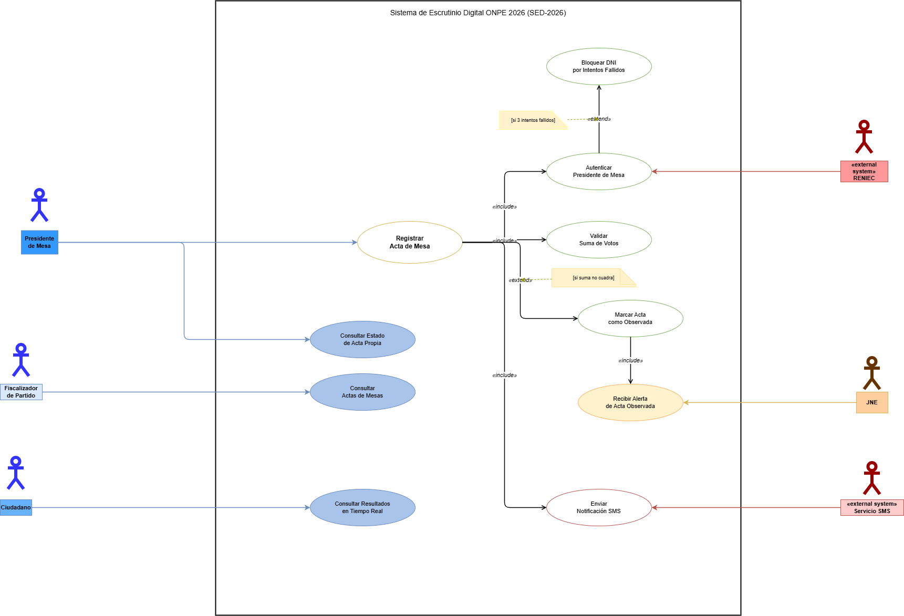
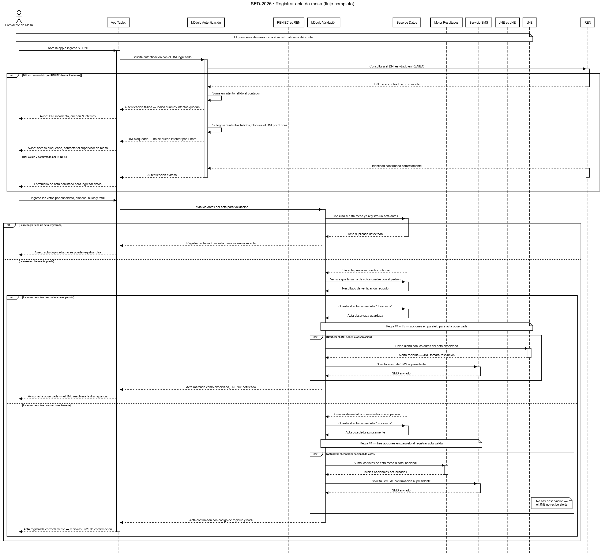
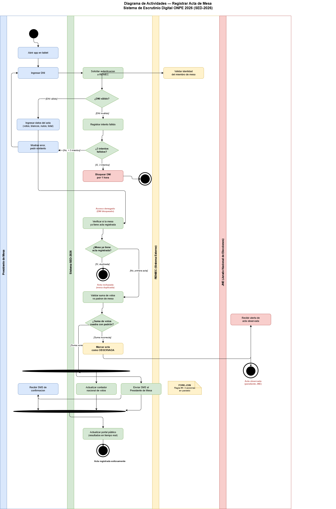
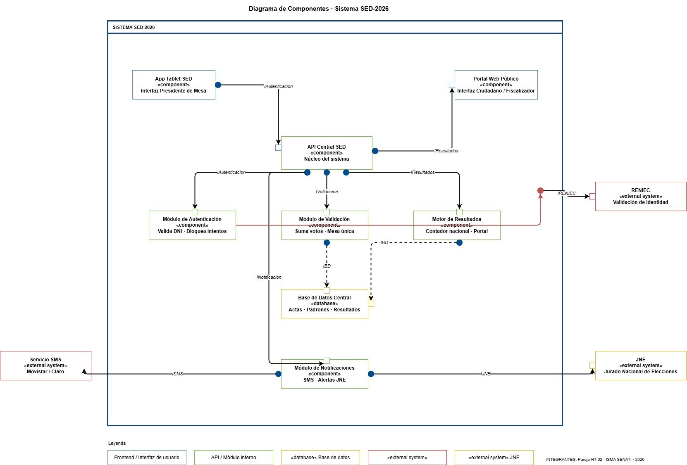
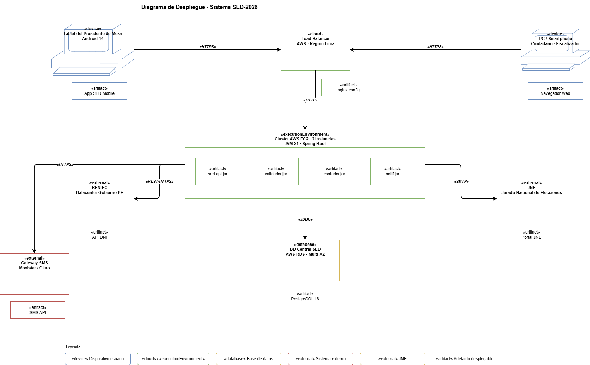

Análisis UML completo del sistema SED-2026 de la ONPE para las Elecciones Generales — Segunda Vuelta del 7 de junio de 2026.
Tras las fallas del sistema STAE en la primera vuelta del 12 de abril, la ONPE requiere un sistema rediseñado, simplificado y robusto para la segunda vuelta del 7 de junio de 2026.
El sistema STAE tuvo fallas críticas durante la primera vuelta, generando retrasos logísticos y extendiendo las votaciones hasta el lunes 13 de abril. La ONPE decidió eliminarlo para la segunda vuelta.
Modelar el "Sistema de Escrutinio Digital ONPE 2026" (SED-2026): el sistema interno que recibe actas de mesas, procesa votos y publica resultados oficiales en tiempo real.
| Actor / Stakeholder | Tipo | Rol en el sistema | Interacción directa |
|---|---|---|---|
| Presidente de Mesa | Actor interno | Registra el acta digitalmente al cierre del conteo | Sí — usa la App Tablet SED |
| Fiscalizador de Partido | Actor interno | Consulta actas para vigilar el proceso electoral | Sí — consulta el Portal Público |
| Ciudadano | Actor interno | Consulta el porcentaje de avance y resultados | Sí — consulta el Portal Público |
| JNE | Actor interno | Recibe actas observadas para resolución | Sí — recibe alertas automáticas |
| RENIEC | Sistema externo | Valida la identidad del presidente de mesa | Sí — API de consulta DNI |
| Servicio SMS | Sistema externo | Envía notificaciones al presidente de mesa | Sí — Movistar / Claro |
| ONPE (institución) | Stakeholder | Cliente del sistema, define reglas de negocio | No — stakeholder, no actor |
| Partidos Políticos | Stakeholder | Interesados en la transparencia del proceso | No — stakeholder, no actor |
¿Qué hace el sistema y quién lo usa? 4 actores humanos + 2 sistemas externos, 10 casos de uso con relaciones «include» y «extend».

Exporta el diagrama de Casos de Uso como PNG desde draw.io y
colócalo en assets/img/diagramas/casos-uso.png
¿Cómo se hablan los objetos? Flujo del caso "Registrar Acta" con bloque par para el paralelismo de la Regla #4.
Al registrar el acta, en paralelo el sistema:
① Actualiza el contador nacional
② Notifica al JNE si hay observación
③ Envía SMS al presidente de mesa

Exporta el diagrama de Secuencia como PNG y colócalo en
assets/img/diagramas/secuencia.png
¿Cómo fluye el proceso? Swimlanes con 4 actores, 3 decisiones clave y fork-join para el paralelismo.

Exporta el diagrama de Actividades como PNG y colócalo en
assets/img/diagramas/actividades.png
Tras validar el acta, el sistema bifurca en 3 acciones simultáneas: actualizar contador, alertar JNE y enviar SMS.
¿De qué piezas está hecho el software? API Central como hub, 6 módulos internos, 3 sistemas externos.

Exporta el diagrama de Componentes como PNG y colócalo en
assets/img/diagramas/componentes.png
¿Dónde se instala el software? Infraestructura AWS Lima, cluster de 3 servidores EC2, PostgreSQL Multi-AZ.

Exporta el diagrama de Despliegue como PNG y colócalo en
assets/img/diagramas/despliegue.png
Los mismos elementos aparecen en todos los diagramas. Esta es la prueba de coherencia arquitectónica del sistema SED-2026.
| Elemento | Casos de Uso | Secuencia | Actividades | Componentes | Despliegue |
|---|---|---|---|---|---|
| Presidente de Mesa | ✦ Actor | ✦ Actor | ✦ Swimlane | ✦ Usuario App | ✦ Tablet device |
| RENIEC | ✦ Actor externo | ✦ Objeto externo | ✦ Swimlane | ✦ «external» | ✦ Nodo externo |
| Registrar Acta | ✦ Caso de uso | ✦ Flujo principal | ✦ Flujo principal | ✦ IValidacion | ✦ validador.jar |
| Base de Datos | — No aplica | ✦ Objeto | ✦ Acción guardar | ✦ «database» | ✦ PostgreSQL RDS |
| Servicio SMS | ✦ Actor externo | ✦ Bloque par | ✦ Fork-join | ✦ «external» | ✦ Gateway SMS |
| JNE | ✦ Actor | ✦ Bloque par | ✦ Fork-join | ✦ «external» | ✦ Nodo externo |
Arquitectura de punto único de fallo (SPOF). Un solo componente concentraba toda la lógica. Al fallar, no había fallback ni distribución de carga. 453 toneladas de cédulas y 27 millones de electores dependían de un sistema frágil.
La API Central distribuye la carga entre módulos especializados e independientes. Si el Módulo de Notificaciones falla, el registro de actas continúa. El Cluster EC2 con 3 instancias garantiza alta disponibilidad. PostgreSQL Multi-AZ elimina el SPOF en datos.
El SED-2026 modela un sistema que aprende del fracaso del STAE. La coherencia entre los 5 diagramas UML garantiza que cada decisión arquitectónica — desde el caso de uso hasta el nodo de despliegue — responde a una necesidad real del proceso electoral.
© 2026 · Pareja HT-02 · ISMA SENATI · Sistema de Escrutinio Digital ONPE SED-2026